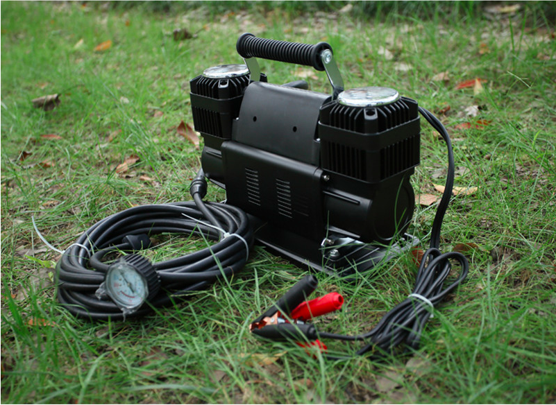
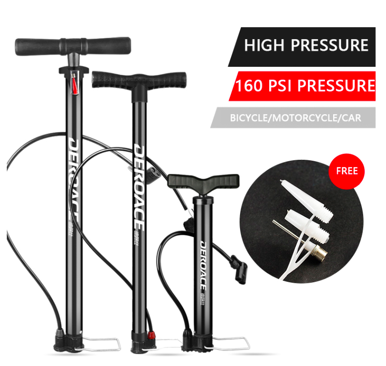
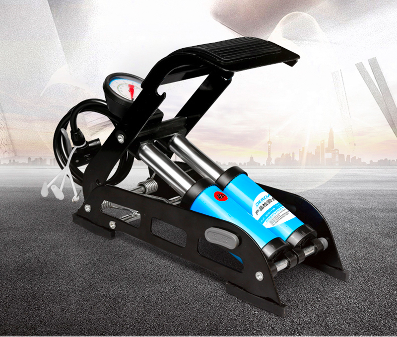
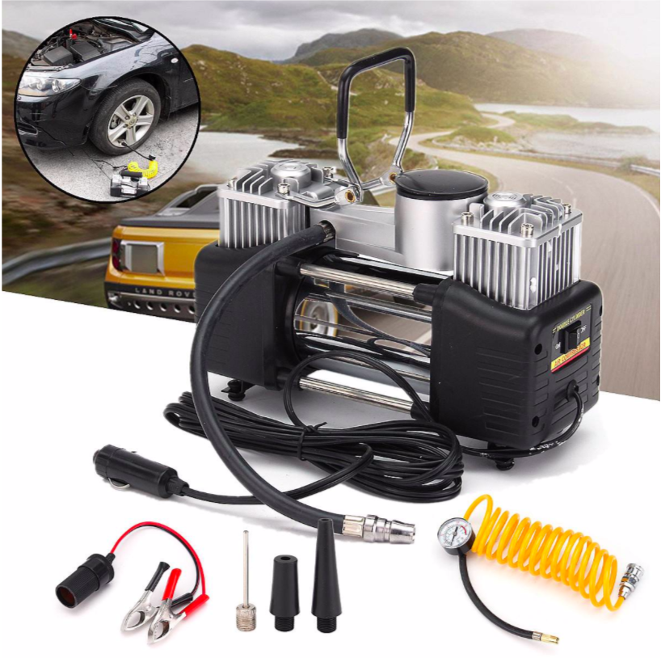
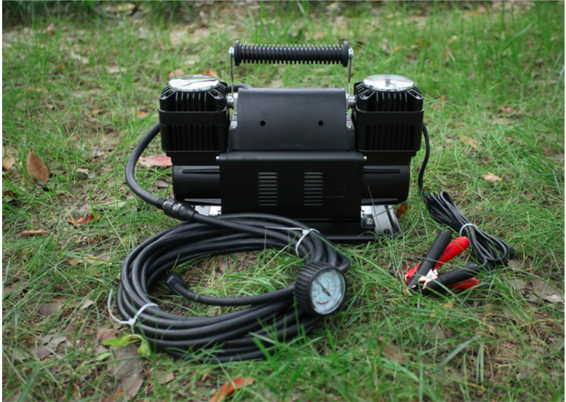

Рейтинг автомобильных насосов: как выбрать автокомпрессор
Если вы много проводите времени за рулём автомобиля, то процедура подкачки и регулировки давления в шинах для вас чуть ли не обыденность. Все делают это по-разному, кто-то на ближайшем СТО или заправке, а кто-то вручную с помощью насоса или компрессора. Но иногда непредвиденные ситуации застают нас врасплох и всё зависит от нашего инструмента. О том, как выбрать подходящий и на что стоит обратить внимание мы вам и расскажем.
Содержание
- Какие бывают автомобильные насосы?
- Какой автомобильный компрессор выбрать?
- Механический автомобильный насос
- Электрические автомобильные насосы
- Преимущества и недостатки компрессоров
- Как выбрать автомобильный компрессор
- Топ-7 лучших автокомпрессоров и насосов
Какие бывают автомобильные насосы?
Для начала разберемся какие насосы вообще существуют. Изначально их можно разделить на 2 группы:
-
Механические
- ручные
- ножные
-
Электрические
- мембранные
- поршневые
Оба имеют свои особенности, но обо всём по порядку.
Какой автомобильный компрессор выбрать?
Если вы уже знаете для чего вам насос и хотите сэкономить время, вот вам краткий список-описание для каждого типа (нажмите, чтобы получить более подробную информацию/перейти к описанию):
- Ручные или ножные – механические насосы самые надёжные, лучший выбор для подкачки колеса легкового автомобиля, мотоцикла или велосипеда в любое время года. Скорость зависит от ваших физических данных.
- Мембранные – простенький электрический насос. Подходит для легковых автомобилей и тёплого климата. Надёжный, не требует физических усилий, не подходит для внедорожников и не пригоден для работы при минусовых температурах.
- Поршневые – в зависимости от модификации подходят под любое средство передвижения. Меньше времени на подкачку, поочередная подкачка нескольких колёс без перерывов. Подходят для тяжелой техники, внедорожников, более дорогие.
Но, если вы впервые сталкиваетесь с выбором подходящего агрегата далее последует детальная информация про особенности каждого из них.
Механический автомобильный насос
Механический автомобильный насос – это устройство, при работе которого нужно приложить физические усилия для накачивания шины. Они также бывают двух типов:
Ручные - выполнены в форме буквы «Т» с вертикально расположенным цилиндром и ручками по бокам
Купить можно тут !

Ножные - конструкция в виде ножниц с цилиндром и поршнем установленными по середине
Купить можно тут !
Те физические усилия, о которых мы говорили, являются и основным недостатком, которые могут вызвать боли в ногах/спине. Соответственно может понадобится больше времени.
Впрочем, важно упомянуть и о преимуществах: низкая стоимость, простота конструкции, и, если говорить про ножной - компактность.
Электрические автомобильные насосы
Электрический автомобильный насос(компрессор) – устройство, которое не требует физических усилий. Имея небольшой рабочий цилиндр и электродвигатель питается от прикуривателя или напрямую от клемм аккумулятора.
Также бывают двух типов:
Мембранные
Существенный недостаток, на который стоит обратить внимание – при отрицательных температурах резина мембраны теряет свою эластичность и становится хрупкой. Даже если вам удастся запустить компрессор, то мембрана может просто порваться. Впрочем, если вы живёте в краях потеплее, также не забывайте, что данный компрессор не терпит длительных нагрузок и требует перерывов после 15 минут работы.
-
Преимущества
- Долговечность - поломки случаются гораздо реже;
- Ремонтопригодность - возможна замена диафрагмы;
-
Недостатки
- Мощность ниже, чем у поршневого типа - до 4 атмосфер;
- Невозможность эксплуатации в мороз.
Не стоит беспокоиться о низкой мощности мембранного компрессора, ведь давление в шинах легковых автомобилей редко когда превышает 3 атмосферы. А более мощное оборудование необходимо лишь для обслуживания больших внедорожников, грузовиков и спецтехники.
Купить можно тут !
Поршневые
-
Преимущества
- Большая мощность - можно накачивать до 8 атмосфер;
- Возможность круглогодичной эксплуатации.
-
Недостатки
- Ремонтопригодность - поршень и цилиндр не меняются;
- Перегрев - если давать большие нагрузки, то каждые 15 минут нужно давать компрессору остыть.
Наиболие универсальный вариант представлен на фото подключается через прикуриватель, накачает колесо легковушки за 3-4 минуты и может работать непрерывно в течении 15 минут. Максимальное давление 6 атмосфер.
Купить можно тут !
Как выбрать автомобильный компрессор
При выборе автомобильного компрессора, нужно обратить внимание на ряд характеристик:
- максимально возможное давление;
- скорость подкачки;
- время безостановочной работы;
- мощность электродвигателя.
Если вспомнить про механические насосы (ссылка вверх), то все эти показатели весьма условны, потому что зависят от физических возможностей человека (моторчика).
Максимально возможное давление
... такое давление, которого может достичь компрессор внутри шины. Для легковых автомобилей нормальным считается давление 2 - 2.2 атмосферы, с которым может справиться практически любой компрессор.
Но в случае, когда нужно больше, для внедорожников и грузовиков, вам понадобится автокомпрессор способный накачать 8 и более атмосфер. Обратите внимание на более производительные модели, несмотря на давление значительно выше необходимого вы также получите высокий запас прочности. Ведь обычный легковой компрессор выдавая 7-8 атмосфер будет работать на пределе возможностей, что приведёт к быстрой поломке.
Скорость подачи воздуха
Следующий важный параметр, который измеряется в л/мин. Практически любой компрессор для накачки шин справится с легковой покрышкой за 2-5 минут. Большая скорость нужна лишь при стравливании и подкачке на офф-роаде, или для вечных торопыг.
Впрочем, сюда тоже применим подход "с запасом". И дело даже не в мощности, а в системе охлаждения которой комплектуются более дорогие модели. Благодаря даже обычному вентилятору, меньше шанс перегрева двигателя и поршневого насоса внутри корпуса.
Накачать компрессором шины - в прямом смысле «дело пары минут». К примеру, на фото изображен более дорогой, но очень мощный компрессор, который способен накачать даже крупную шину внедорожника.
Купить можно тут !
Время безостановочной работы компрессора
Исходя из предыдущих параметров, мы приходим к необходимости безостановочной работы насоса. Обычно эти показатели не указываются в характеристиках бюджетных компрессоров, запас у всех - примерно 20 минут.
Если на подкачку одного колеса уходит около 5 минут, то для подкачки всего комплекта дешевому компрессору придется работать на пределе возможностей. А вот на более дорогих аппаратах, время беспрерывной работы автокомпрессора легко превышает 30 минут и на подкачку одной шины потребуется 2 минуты, таким образом - прибор прослужит дольше.
Мощность компрессора
И, наконец, последнее на что стоит обратить внимание - мощность электродвигателя компрессора.
Тут немного хитрее и большая мощность не означает быстроту работы системы, скорее нагрузку на электросеть автомобиля.Следственно, очень мощные компрессоры нужно будет подключать не от прикуривателя, а непосредственно от аккумулятора автомобиля. Причина заключается в том, что прикуриватель имеет свой предохранитель, рассчитанный на 10-15 А, который при напряжении в 12 В выдаёт лишь 120-180 Вт максимально допустимой мощности. Проще говоря, для легкового автомобиля мощность электродвижка компрессора не должна превышать 120-180 Вт.
Самый мощный и шустрый компрессор, мощностью 1080W способен накачать комплект внедорожного автомобиля за 10 минут. Подключается к аккумулятору с помощью "зажимов-крокодилов".
Купить можно тут !
Существуют также вторичные особенности, которые смогут помочь вам определиться в выборе того самого насоса.
Кратко перечислим:
- Манометр - единицы и точность измерения в идеале до 0.01 Атмосферы. На выбор цифровой или механический (цифровой просто удобнее).
- Функция откачки воздуха - пригодится, когда нужно удалить воздух из надувного матраса или резиновой лодки перед тем, как их свернуть.
- Наличие стравливающего клапана - чтоб удобно снизить необходимое давление при съезде на бездорожье.
- Функция автоматического отключения - в холодную пору вам не придётся мёрзнуть на улице.
- Наличие термореле - автоматическое отключение при перегреве.
- Наличие насадок - для подкачки различного спортинвентаря, матрацев и прочего.
- Наличие фонаря - не так обязательно, как для удобства при ЧП в ночное время. Всякое бывает и не всегда телефон заряжен.
- Сумка для хранения - бережливость также играет некую роль в долговечности.
- Материалы изготовления - лучше отдать предпочтения металлическим компрессорам, а при выборе пластиковых обратить внимание на морозостойкость и термостойкость материала. То же самое касается и шлангов и длинна, 3м будет достаточно.